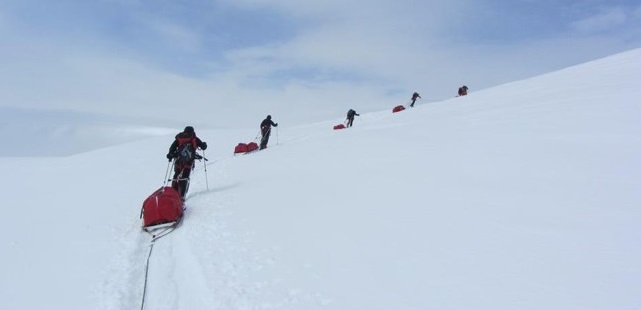
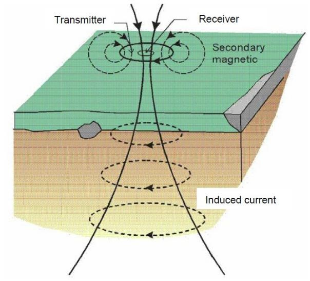
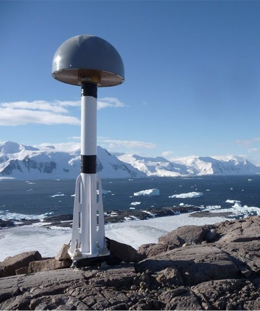
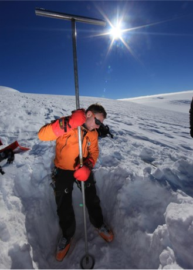
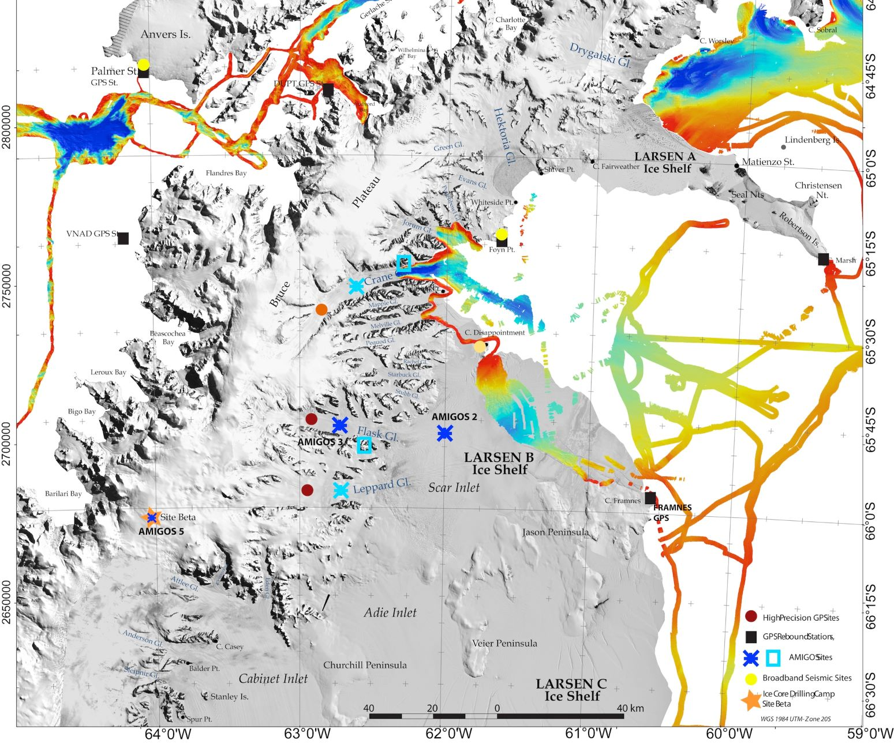
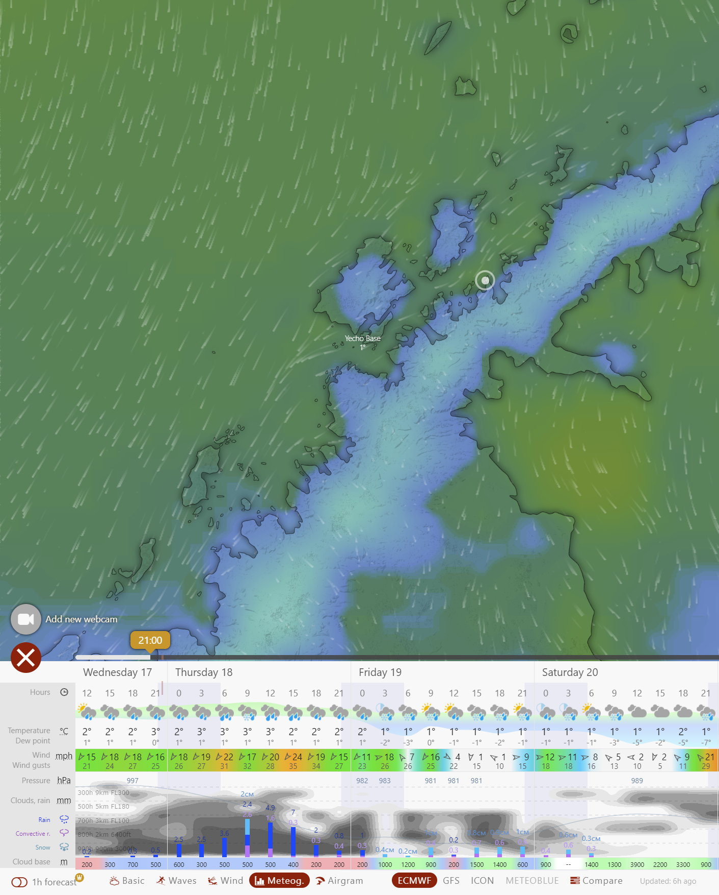

The Purpose
Following on from the success of the 2012 ‘Spirit of Scott’ Expedition, the intention is now to continue the science and exploration programme on the Antarctic Peninsula by travelling over and then along the spine of the Antarctic Peninsula. In the 201st Anniversary year of the discovery of Antarctica, the team will cross the Forbidden Plateau from Portal Point to Foyn Point. At Foyn Point they will put in place and start a GPS data gathering device to measure the movement of the Peninsula bedrock. This will provide information on how the thickness of the ice covering the rock is changing. The team will then travel down the spine of the Peninsula and continue their data gathering, to contribute to the scientific understanding of what is happening on the Peninsula in terms of climate change, meteorology, geology and glaciology; all things that have a direct impact on the future of our planet and every one of us. Of special importance will be the teams research into microplastics and metal contamination of the snow on the Peninsula, revealing just how we are affecting Antarctica. Like earlier pioneers to Antarctica, the team want to inform, educate and inspire the general public on the subject of Antarctica. To these ends there will be a comprehensive educational outreach programme that will work with schools, universities and the general public to broaden knowledge and understanding about Antarctica. The team will also conduct a Commemoration Service for Sir Ernest Shackleton on 5 January 2022. This will follow the lines of a naval Service based on Shackleton being a member of the Royal Naval Reserve.

Like Shackleton’s final Quest Expedition, which was to undertake science, the Team will conduct the following science projects;
-
Gather snow samples from remote locations to measure microplastic contamination
-
The expedition will carry out a survery of microplastics within the snow pack whilst crossing the Antarctic Peninsula.
Why is the expedition carrying out this survey? Even though microplastics are only up to 5mm in size, they are now estimated to be trillions of these particles in the marine environment. Theses plastics can take hundreds or even thousands of years to break down. How much is on the Antarctic, no-one really knows. There is evidence of vast amounts of microplastics on the summit of Mount Everest.
The effect on the wildlife though and getting into the food chain is of course something of great concern to all of us and obviously will damage the animals and eventually ourselves in the near future. More about the effects of microplastics can be seen here.
This project is in collaboration with the University of Plymouth and Prof. Richard Thompson & Dr Imogen Napper (RNR). The objective of which is to understand the level of microplastic contamination in the Southern Ocean and its impact on snow deposition in the Antarctic Peninsula. Here is a letter Dr Imogen Napper has written about the subject:

To whom it may concern,
Plastic pollution is ubiquitous within the natural environment, with microplastics being of particular concern. Due to their size, microplastics (< 5 mm) have been reported to travel great distances and have been found in the deep sea, sea surface and in the air. There is a growing focus on the atmospheric transfer of microplastic and what distances they can travel.
Understanding exactly how far microplastics can travel is the next big scientific question to answer. By collecting remote Antarctic snow, at varying depths, it will help answer this question. The snow samples collected will identify the potential increasing concentration of microplastic in Antarctica over time.
Similarly, last year, the National Geographic Everest team collected snow samples towards the top of Mt. Everest for the University of Plymouth to analyse. Although we cannot share the results until published, we have identified some key microplastic patterns in remote areas. Collecting more samples from remote areas, such as Antarctica, is critical for confirming our predictions.
Our research group have been leading researching plastic pollution research for over a decade. Prof. Richard Thompson (lead of the research team) coined the term ‘microplastic’ in 2004. Following this, our team were the first to highlight the ingestion of microplastics by fish and other marine life. Plus, the first to show the role textiles and wastewater play in their source and transmission – with a single wash of clothing releasing more than 700,000 microfibers; and how some facial scrubs could contain up to 2.8 million microbeads. This led to our team winning a Queen’s Anniversary Prize for Higher and Further Education.

Dr. Imogen Napper
University of Plymouth
-
-
The expedition will take magnetotelluric measurements to determine the subsurface conductivity and composition of the Peninsula
-
Magnetotelluric (MT) is an electromagnetic geophysical method to find out the earths sub-surface electrical conductivity from measurements of natural geomagnetic and geo-electric field variation at the earths surface.

-
-
During the expedition we will measure UV Radiation levels across the Peninsula to look at Ozone depletion and the impact on bio-mass in the Antarctic waters
-
Ozone is made up of 3 oxygen patterns. It sits in the stratosphere which is 7 to 25 miles above the earths suface. This ozone layer acts like a sunscreen, which shields everyone and everything from ultraviolet radiation which is known to cause damage to plants and the highly sensitive plankton which sits at the foundation of the food chain. In more populated regions of the world, this ozone can react with vehicle emmisions and other sources of pollution, which forms harmful smog in the lower atmosphere.
In Antarctica a hole forms during the southern hemispheres' late winter as the suns' rays start the ozone-depleting reactions. These cold temperatures persist into the spring which enable the ozone depleting process, hence why the hole forms over antarctica, which damages both the nature on the surface and in the sea.
- Manchester University - Measurement of UltraViolet (UV) Rates across the Antarctic Peninsula. This project is in collaboration with Prof Matt King. Objective: Better understanding of the operation of Ozone Hole and field confirmation of projections of UV sterilisation of the water column.
-
-
The expedition will emplace and set to work a GPS system to measure movement of the Antarctic Peninsula
-
Durham University - GPS & Seismic Stations. Service and upgrade GPS and seismic stations at Foyn Point & Kidd Island. Project is in collaboration with Durham University & UNAVCO (and has direct link with the BAS). Objective: Better understanding of the plate movement of the AP and Ice-depth changes leading to sea-level rise as consequence of climate change.

-
Why is this important? Scientist have been measuring the amount of ice loss and the subsequent rebound of the Earth's surface and mantle with it now no longer being compressed with billions of tons of ice. These variations can also effect the shape of the Earth's gravitational field. Having more of these GPS & Seismic stations, scientists will have increased knowledge to quantify the response of the solid Earth to ongoing ice sheet changes.
-
-
Why is this important? It is well known fact that the polar ice caps are melting and the resulting rise in sea levels will endanger us all. Antarctic Quest 21 in conjunction with Professer Van Den Broeke we will assist in gaining a greater knowledge of antarctic peninsulas' snow deposition and its effect on climate change.
-
University of Utrecht - Snowfall deposition Rates on the Eastern Coast of the Antarctic Peninsula. This project is in collaboration with Prof Michiel Van Den Broecke. Objective: Better understanding of climate change on the Antarctic Peninsula and field confirmation of theoretical models of snow deposition rates/accumulation.

-

-
Why is this important? In situ observations remain essential to develop, evaluate and improve regional climate models, ice dynamical models and subglacial hydrological models. This information will be fed to the Institute for Marine and Atmospheric Research Utrecht - Meteorological observations across the Antarctic Peninsula.
-
This project is in collaboration with Prof Van Den Broeke. Objective: Better understanding of Polar Climate Change, Ice Sheet Mass Balance and Sea Level Rise.

- Unfortunately, Antarctica is not free from enviromental pollution. The burning of waste, inconsiderate sewage disposal, oil spillage and fuel combustion all lead to antarctica being contaminated with heavy metals. The impact of these heavy metals, especially on sensitive algae could well disrupte the antarctic food chains. The sensitivity and response of antarctic algae to these metal toxins have not been well studied. Antarctic Quest 21 will help scientists work out how much metallic contamination has occured on this part of the peninsula and the potential impact on wildlife.
- Metallic Contaminants Survey of remote locations on the Antarctic Peninsula. This is in collaboration with Prof Simon Usher & Prof Angela Milne. Objective: Better understanding of the level of contamination of the Southern Ocean waters and related impact on the biomass through effect on phytoplankton & zooplankton.